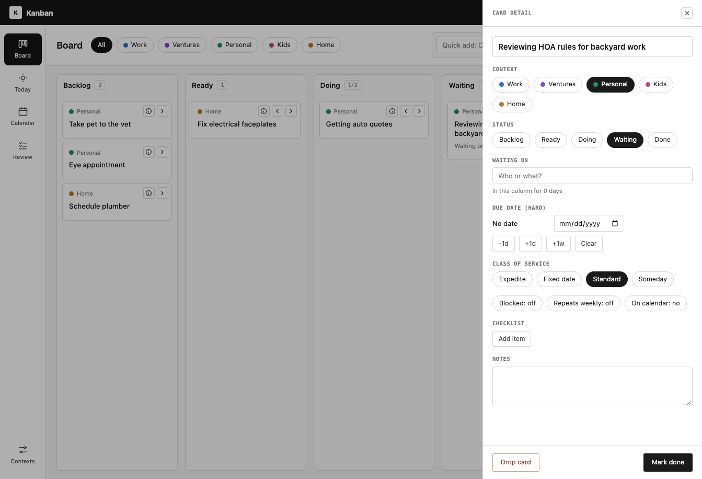

My Lore
A micro journal for curating life's moments, achievements, and milestones. Reminisce
through a time capsule
or use the data for a college essay.
Personal data

Lean Canvas
Single page business model canvas, augmented with a critical analysis framework 4U +
BLAC framework (Michael Skok's Harvard
Lab framework)
Productivity

Knowledge Garden
A document reading app that provides contextual annotations to build a personal
knowledge garden. Designed for academic journals and deep reading.
Productivity

KTM Task Manager
A kanban-style personal task manager with google calendar integration.
Productivity

Math Regression
Plot data and explore regression models visually.
Teaching

Composite Shapes
Practice area and perimeter of composite shapes.
Teaching